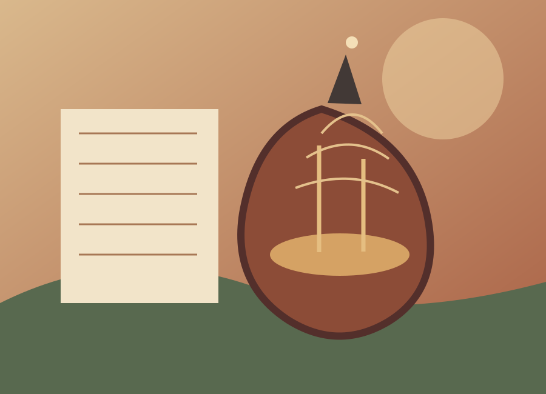
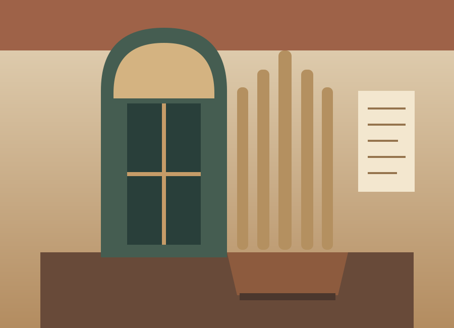
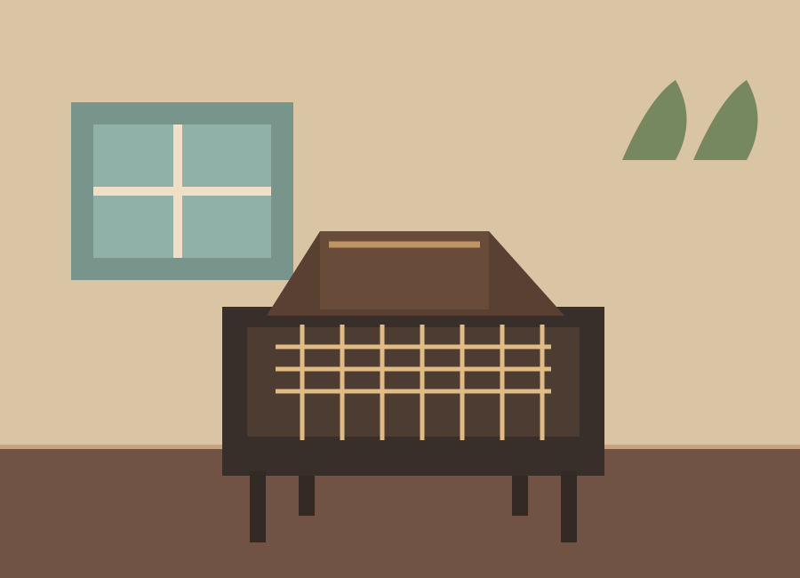

Mostra de longa duração
Música Popular
Cururus, modas de viola e outras expressões que atravessam a vida musical da região.
Saiba maisUm patrimônio vivo em Itu
No coração de Itu, a música conta histórias de pessoas, casas e comunidades. Entre, descubra e faça parte dessa memória.
Entrada franca · Domingos, das 9h às 13h
Um lugar de encontros
Criado em 2007 e mantido pelo Instituto Cultural de Itu, o museu pesquisa, preserva e comunica referências da produção e da memória musical de Itu e das diversas comunidades do Médio Tietê.
A coleção encontra morada em uma casa construída em 1890, tombada pelo CONDEPHAAT. Aqui, instrumentos, partituras e lembranças aproximam diferentes gerações da história da música.
Conheça a história do museuPercursos de escuta
Conheça alguns temas das mostras de longa duração do museu.

Cururus, modas de viola e outras expressões que atravessam a vida musical da região.
Saiba mais
Instrumentos e repertórios ligados à tradição musical sacra de Itu.
Saiba mais
Objetos e práticas que mostram como a música fazia parte do cotidiano familiar.
Saiba maisO museu reúne cinco salas expositivas. Consulte o site oficial para conhecer também Música Marcial, de Seresta e de Concerto e O Mestre de Música e o Copista.
Descubra de onde estiver
Percorra os ambientes do museu antes de vir ou relembre uma visita especial.
Iniciar tour virtualDo papel ao som
Explore partituras e gravações que ajudam a contar a história musical de Itu.
Manuscritos e partituras revelam compositores, repertórios e modos de fazer música.
Consultar partiturasEscute “A louca” e “A noite de São João”, de Elias Álvares Lobo; o “Hino de Itu”, de Roberto Manzo e José Luís de Oliveira; e a “Ladainha a 4 vozes”, do Pe. Jesuíno do Monte Carmelo.
Ouvir o acervoSua próxima descoberta
A entrada é franca. Para agendar, fale com a equipe do museu. Escolas e universidades podem consultar horários especiais.
Agendar minha visitaConfira o funcionamento regular e indique quando gostaria de vir.
Conte quantas pessoas participarão e se a visita é de uma instituição.
A equipe responderá pelo e-mail informado no contato.
Visitas escolares e universitárias podem ser agendadas em horários especiais.
Cultura se faz junto
O Instituto Cultural de Itu é formado por pessoas que dedicam seu conhecimento e trabalho voluntário à preservação da cultura. Quer contribuir com o museu?
Quero ser voluntárioRealização e parceria